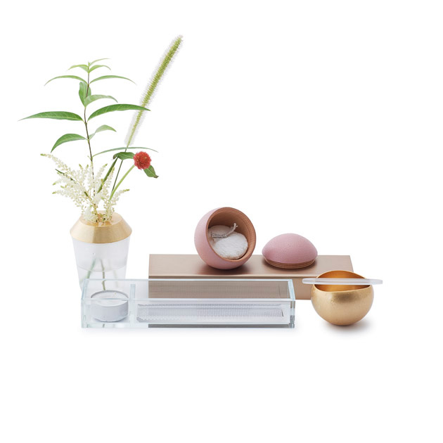
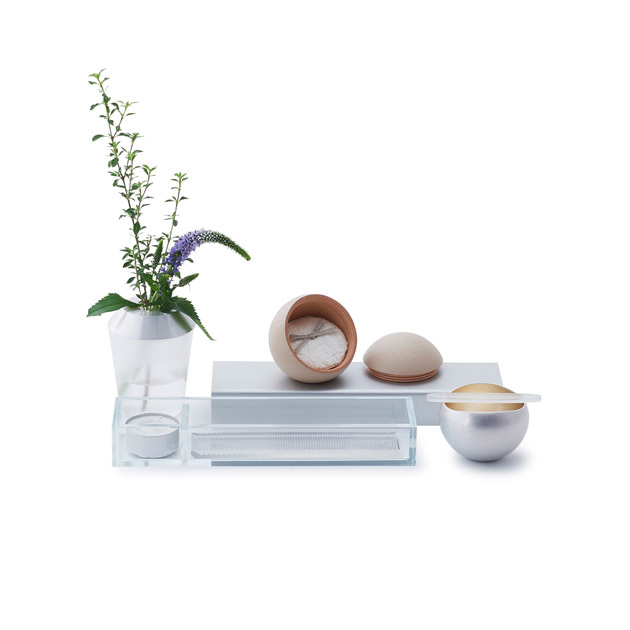
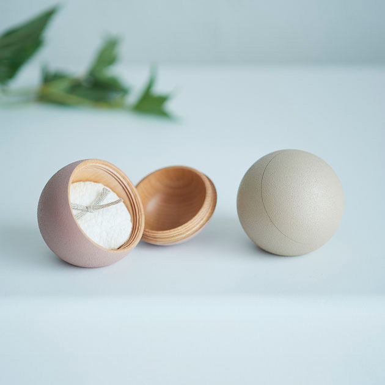
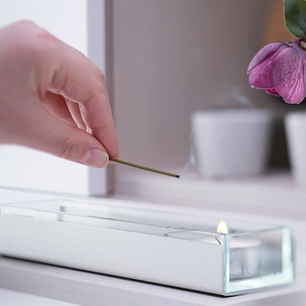
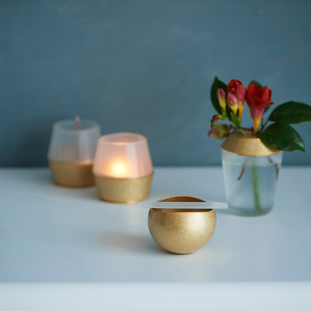
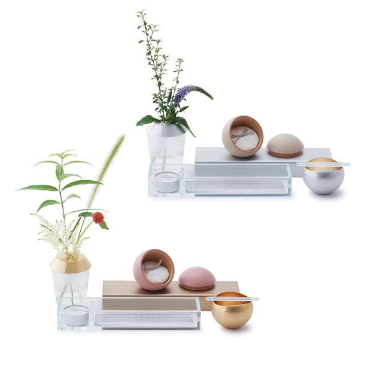

Do
間、個人化への導線
暮らしに間を置く道具を知り、買える場所へ行く。
Home › Do › 祈りの道具屋 まなか › soso Aセット


color: ゴールド / シルバー
-
ゴールド
¥110,550 税込
-
シルバー
¥110,550 税込
商品説明
ミニ骨壺『soso』を中心とした 美しい空間
大切なあの人が眠る、温もりの木の骨壺『soso』を中心とした手元供養セットです。『ele りん』、『ele 花立』、『聞座』を組み合わせました。
大切なあの人が近くで眠るその姿に、想いや祈りをより身近に感じることができるでしょう。
＊本セットの商品内容
(1)soso ×1
(2)ele りん ×1
(3)ele 花立 ×1
(4)聞座（灯立て兼香炉） ×1

大切な人が眠る、
あたたかな場所『soso』
ご遺骨とは、あの人が最後に残してくれた贈り物。そんな贈り物を納める骨壺を、ご遺骨をしまう器ではなく、大切な方が眠る場所と感じていただけるように。『soso』は、骨壺というよりも、あの人が眠る、清らかで美しいベッドです。
水目桜の木でつくったまん丸のやさしい空間で、やわらかなお布団に包まれて。大切なあの人が、いつも近くで眠っている。そばに置くだけで、きっと、そんな安心を感じていただけます。

あの人の声を聞くように
『聞座』
香道において、香りは聞くもの。座には、物を据えておく場所という意味があります。灯立て付き香炉『聞座』は、その2つの言葉を繋ぎ合わせ、見た目の美しさや機能性だけの追求だけではなく、仏具としての新たな可能性を拡げることを目的に開発されました。お線香を焚くことはもちろん、あの人の象徴の前で、目を閉じ、手を合わせ、自分自身や大切なあの人の心の声を聞きませんか。
ご使用には、別売りのティーライト（ミツロウキャンドル）、 [日々香好日]線香がおすすめです。

機能美を愉しむ
エレガントなおりんと花立
現代の暮らしのなかで、大切な人に寄り添い祈ることが習慣になる、その一助となりたい。『ele -エレ-』は、そんな想いを出発点につくった仏具シリーズです。使うことが嬉しくなる機能性と、暮らしになじむエレガントなデザイン。祈りを通じて、あなたのこころと暮らしが豊かに彩られていくことを願っています。

『soso』の
カラーに合わせて
2つのセット
『soso』のカラーに合わせて2種類のバリエーションをご用意しています。ピンクベージュにはゴールドの仏具、グレーベージュにはシルバーの仏具を合わせました。あなたらしい祈りの空間に合うカラーをお選びください。

商品仕様
サイズ
(1)soso
本体:幅6.5cm×奥行6.5cm×高さ6.5cm
お骨袋:幅5cm×奥行0.5cm×高さ5cm
(2) ele りん
おりん：幅6.3cm×奥行き6.3cm×高さ4.4cm
りん棒：幅8cm×奥行き0.8cm×高さ0.4cm
(3)ele 花立
全体：幅6.4cm×奥行き6.4cm×高さ8.2cm
真鍮：幅6.4cm×奥行き6.4cm×高さ1.7cm
ガラス：幅6.2cm×奥行き6.2cm×高さ6.8cm
(4)聞座（灯立て兼香炉）
全体:幅21.1cm×奥行5.7cm×高さ3.15cm
アルミ蓋:幅21.1cm×奥行5.7cm×高さ2.75cm
ガラス本体:幅21cm×奥行5.2cm×高さ3cm
素材
(1)soso
本体:水目桜
お骨袋:オーガニックコットン
(2)ele りん
おりん：真鍮
りん棒：ポリカーボネート
(3)ele 花立
真鍮、硝子
(4)聞座（灯立て兼香炉）
ガラス、アルミ
生産地
(1)soso
本体：石川県加賀市
お骨袋：東京都新宿区
(2)ele 花立
真鍮：富山県
ガラス：東京都
(3)ele りん
おりん：富山県
りん棒：東京都
(4)聞座（灯立て兼香炉）
ガラス：栃木県足利市、
アルミ：東京都江東区
カラー
ゴールドトーン
シルバートーン
備考
灯立て付き香炉『聞座』のご使用には、別売りのティーライト（ミツロウキャンドル）、 [日々香好日]線香がおすすめです。